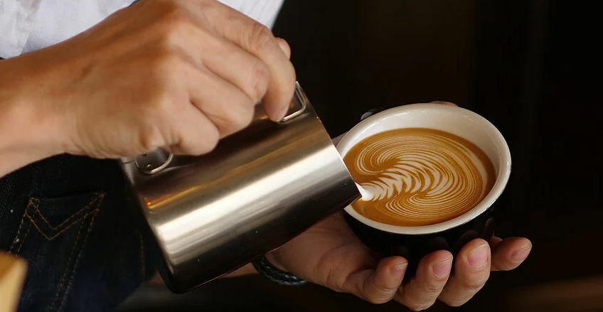

HOME BARISTA
A home barista is someone who has a passion for making high-quality coffee beverages at home. They invest in coffee equipment, such as espresso machines and grinders, to replicate the coffeehouse experience. Home baristas have knowledge and skills in coffee bean selection, grinding, extraction, milk steaming, and latte art. They experiment with different beans, roasts, and brewing methods to achieve desired flavors. Home baristas can expand their skills through online resources and communities. They enjoy sharing their creations with others and can personalize their coffee experience while saving money.